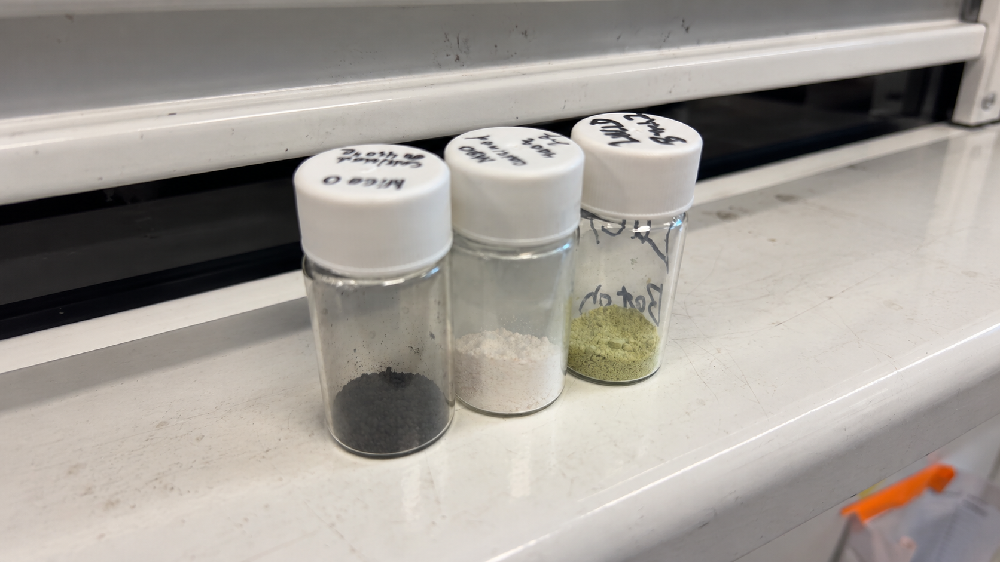

Catalytic CO₂ Conversion Design and analysis of a catalytic process for converting CO₂ to value-added chemicals.Chemical Engineering
Christopher Loorkhoor
University of Houston
Chemical Engineering student passionate
about catalysis, sustainable process design,
and translating research into real-world impact.
About Me
I am a chemical engineering student interested in research, process engineering, and catalysis. What draws me most to research is the opportunity to create new knowledge rather than only apply what is already known. I like the idea that an experiment, model, or process can answer a question that did not have a clear answer before, and that the result can become something other people build on. At the same time, I want my experience in chemical engineering to extend beyond one research area. Through experimental research, process simulation, computational modeling, and other projects, I have tried to build a broad technical foundation and better understand how work at the laboratory scale connects to larger engineering problems. That is also why I am interested in gaining more industry experience before deciding exactly where I want to specialize.
Long term, I plan to pursue a PhD in chemical engineering, most likely in catalysis or a related area. I see a PhD as an opportunity to pursue the kind of research I enjoy while also developing ideas that can eventually contribute to real engineering systems and processes. My current goal is to continue developing as both a researcher and an engineer, while learning enough across different areas of chemical engineering to eventually be able to choose which chemical engineering problems I want to work towards solving.
Research and Engineering Projects
View All Projects →Academic & Research Journey
Timeline
2024
Began Undergraduate StudiesBegan pursuing my B.S. in Chemical Engineering at the University of Houston.
Summer 2025
Summer Undergraduate Research Fellowship (SURF)Conducted research on Ga-modified ZSM-5 catalysts, investigating heterogeneous catalysis and sustainable fuel production.
August 2025
Began CO₂ Capture ResearchBegan CO₂ adsorption research in the Bollini Research Group, including fixed-bed experiments and sorbent materials.
Summer 2026
UH iGEM and Continued CO₂ Capture ResearchParticipated in UH iGEM computational modeling using Python and COBRApy while continuing my CO₂ adsorption research.